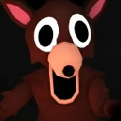
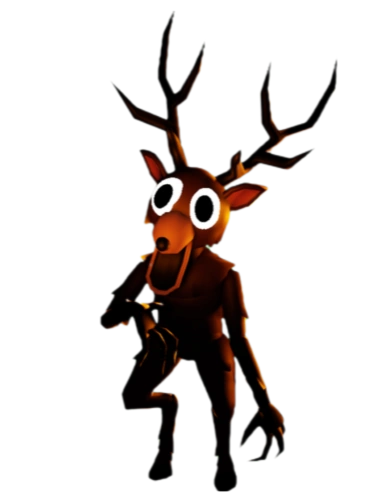

Олень - ваш головний ворог у грі "99 ночей в лісі". Він не атакує в першу ніч. Натомість, він спостерігає за вами. Потім, коли він вивчить вас, він атакує. Він іноді не з'являється, але він може прийти зі своєю армією культистів. Також він може стати голодним. Коли він голодний, він у 2 рази швидший, і його очі стають червоними. Його неможливо вбити, але він боїться світла, та не вміє залазити на високі місця. Іноді, замість нього приходить інший монст- сова або баран.
Є міфи що олень - це п'ята дитина . Він також має інший міф - культисти провели ритуал на ньому. Його також неможливо приручити. Олень дуже хиррий, і коли вогонь гасне, він спішить вас з'сти, бо ще коли буде така можливість?
Цікаві факти
- Образ The Deer навіяний міфами про «духа лісу», який карає тих, хто порушує гармонію природи.
- Якщо гравець виживає понад 50 ночей, олень змінює поведінку — стає обережнішим і “грає” з жертвою.
- У деяких біомах він залишає криваві сліди або «тіні» — символи попередніх гравців.
- The Deer не можна повністю знищити: навіть після перемоги над ним у сюжеті він з’являється у фінальній сцені.
- Його звук дихання створений із поєднання записів справжнього оленя та людського вдиху, сповільненого у 4 рази.
